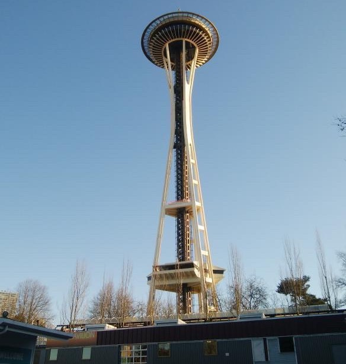

スターバックスコーヒー１号店
みんな大好き"スタバ"の世界１号店がシアトルの「Pike Place Market」というマーケットにあります。特徴的なのは看板が茶色く、ここでしか売っていない限定のマグカップやエプロンがあるということでしょう。私もここでマグカップを買い、今でも愛用しています。
Homestay in Seattle
みんな大好き"スタバ"の世界１号店がシアトルの「Pike Place Market」というマーケットにあります。特徴的なのは看板が茶色く、ここでしか売っていない限定のマグカップやエプロンがあるということでしょう。私もここでマグカップを買い、今でも愛用しています。
スペースニードルは高さ184mの展望台です。東京タワーほど高くはないですが、先っぽにある特徴的なニードルなど全体としておしゃれなデザインになっています。最上階に行くと、上は吹き抜け、周りはガラスで囲われていて開放感があります。円周を板のガラスで囲っているためガラス間に隙間があり、スマホくらいなら余裕で落とす可能性があります。
ここは"ガムウォール"と呼ばれる名所です。その名の通り、大量のガムが壁に貼り付けられています。世界の中でも不衛生な珍名所として認識されているみたいです。歯形がついた大きなガムや、伸ばして氷柱(つらら)のように垂らしたガムなど、いろんなガムが観光に来た世界中の人々によって貼り付けられています。私も抵抗はありましたが、記念に貼り付けて帰ってきました。